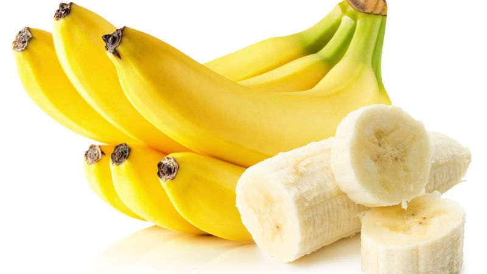
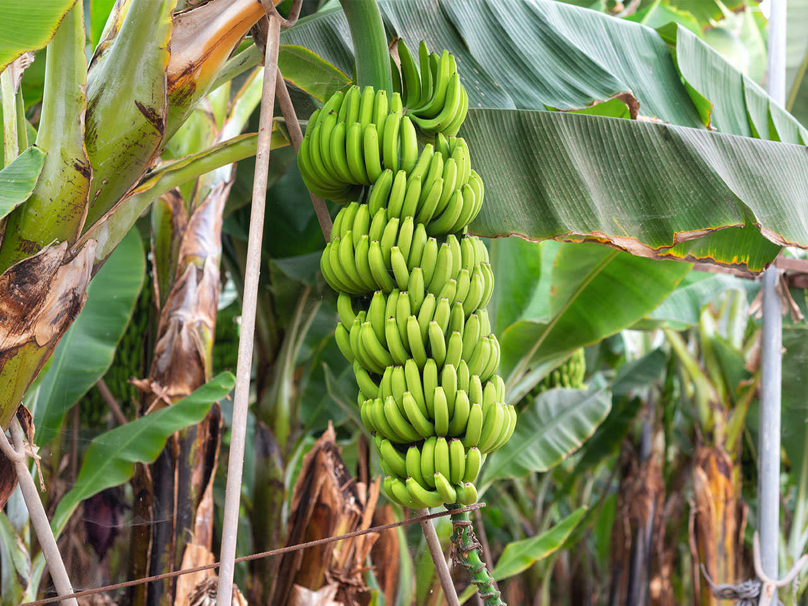

La banane est un fruit tropical apprécié pour sa texture crémeuse et sa saveur douce et sucrée. Originaire d'Asie du Sud-Est, la banane est maintenant largement cultivée dans les régions tropicales et subtropicales à travers le monde. Elle se présente sous une peau jaune épaisse qui protège sa chair tendre et juteuse. Riches en nutriments tels que le potassium, les vitamines B et C, ainsi que les fibres alimentaires, les bananes sont non seulement délicieuses mais aussi bénéfiques pour la santé. Elles sont polyvalentes et peuvent être consommées crues, cuites, ou utilisées dans une variété de recettes, des smoothies aux desserts.
 